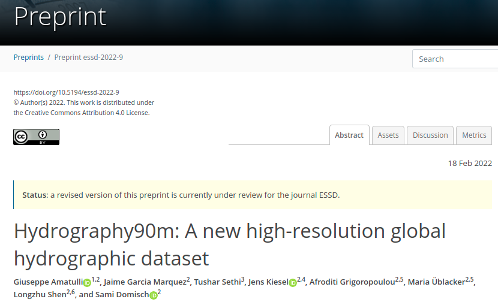
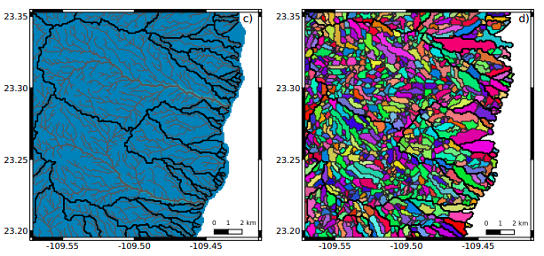
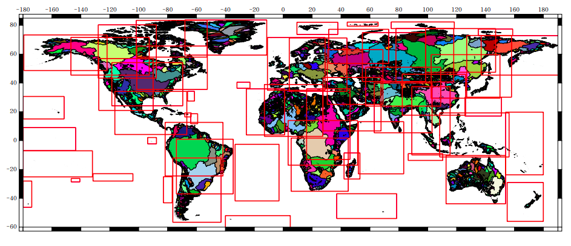
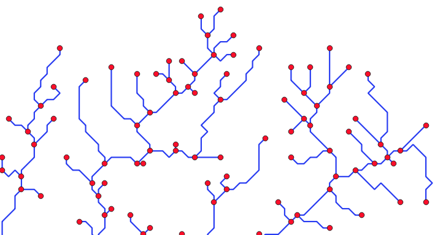
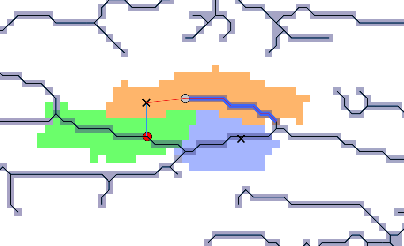
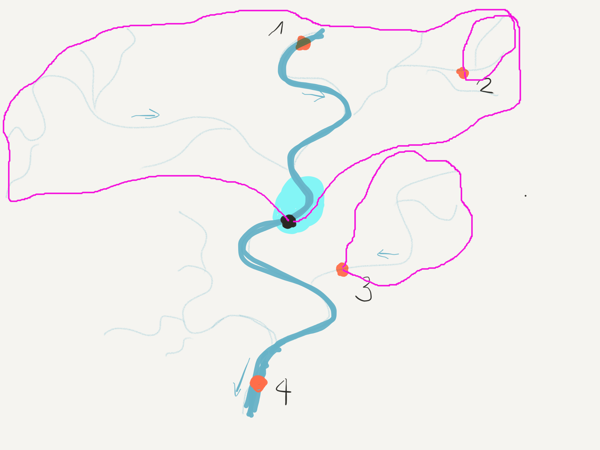

2.4. Jaime García: Modelling freshwater biodiversity: setting the scene, from geo-data to text-data
2.4.1. Project: Global freshwater biodiversity, biogeography & conservation (GLOWABIO)
Gain a comprehensive picture of the current status of freshwater biodiversity
habitat type delineation
state-of-the-art machine learning models to map the diversity of aquatic insects
applying novel systematic conservation network analyses
2.4.2. First step: environmental information
Hydrography90m dataset

* Detail stream channel delineation
* 1.6 million drainage basins
* 726 million unique stream segments with their corresponding sub-catchments
* stream topographic variables (e.g. slope, gradients, curvatures)
* stream topological variables (e.g. stream order)
Land cover information (ESA Land Cover Data 1992-2018 , 250m)
Climate (CHELSA database)
Soil (SOILGRIDS database)
Distance related measures (between observation’s locations)
2.4.3. Data preparation
2.4.4. Sub-catchments as unit of analysis for freshwater biodiversity analysis

Is it better to create a set of scripts to derive and extract data, repetitively?
VS.
Is it better to create a one time running scripts to generate text tables for all sub-catchments and later on make a rapid data extraction?
2.4.5. Computational Units as units of data processing

2.4.6. Scripting procedures
2.4.6.1. Observations
Research based datasets
head Coordinates_forSami_3moSeason_24Nov2020.csv
Site_ID,Country,River,Longitude_X,Latitude_Y,Starting_year,Ending_year,NEW?
100000001,France,Rhone,5.294382,45.829523,1980,2014,
100000002,France,Rhone,5.299435,45.8323815,1999,2014,
100000003,France,AUTHIE,1.918195639,50.30448305,1998,2014,
100000004,France,ANCRE,2.513745757,49.9332428,1995,2014,
100000005,France,NOYE,2.385456242,49.79422815,1997,2015,
100000006,France,SELLE,2.169124882,49.71432717,1997,2015,
100000007,France,EVOISSONS,2.016358357,49.74211763,1997,2015,
100000009,France,DOLLER,7.232714668,47.74561836,1997,2016,
100000010,France,THUR,7.264966594,47.82728771,1997,2016,
stream segments as observation points

# create vector point file by extracting only the geometry points (original
# files have lines and points as geometries) and removing points representing
# outlets (cat = 0)
ogr2ogr $DIR/points_$ref.gpkg $vect \
-sql "SELECT * FROM vect WHERE ST_GeometryType(geom) LIKE 'POINT' AND NOT cat = 0" \
-nln points_$ref -nlt POINT
2.4.6.2. Snapping observations to stream network
Given the potential mismatches between the given coordinates and stream network output some observation would not overlap.

SnapPoint(){
# unique id of the point
export ID=$1
export DIR=$2
export TMP=$3
# path to basins info
export BASIN=$DIR/basins
# prepare target folder
export OUTDIR=$TMP/snappoints
# name of unique id identifier
export SITE=$( awk -F, 'NR==1 {print $1}' $DIR/BasisDataBasinsIDs.csv )
# identify macrobasin ID for that point
export MAB=$(awk -F, -v id="$ID" '$1==id {print $4}' BasisDataBasinsIDs.csv)
# identify microbasin ID for that point
export MIB=$(awk -F, -v id="$ID" '$1==id {print $5}' BasisDataBasinsIDs.csv)
# extract point of interest
ogr2ogr -where "$SITE = $ID" -f GPKG $TMP/point_$ID.gpkg \
$DIR/BasisDataBasinsIDs.gpkg
# extract vector line (stream reach) associated with point
ogr2ogr -where "stream = ${MIB}" -f GPKG $TMP/Microb_${MIB}.gpkg \
$BASIN/basin_${MAB}/bid_${MAB}_stre_order.gpkg
# open grass session based on microbasin raster
grass78 -f -text --tmp-location -c $BASIN/basin_${MAB}/bid_${MAB}_mask.tif <<'EOF'
# read in point of interest
v.in.ogr input=$TMP/point_$ID.gpkg layer=orig_points output=point_$ID \
type=point key=$SITE
# read vector line representing stream reach
v.in.ogr input=$TMP/Microb_$MIB.gpkg layer=orderV_bid${MAB} \
output=streamReach_$MIB type=line key=stream
# Raster with microbasins
r.in.gdal input=$BASIN/basin_${MAB}/bid_${MAB}_micb.tif output=micb
# extract microbasin of stream reach $MIB as raster
r.mapcalc --o "micr_${ID} = if(micb != ${MIB}, null(), 1)"
# make the raster a vector points
r.to.vect --o input=micr_${ID} output=micr_vp_${ID} type=point
# calculate maximum distance between all points in microbasin
MAXDIST=0
for i in \
$( seq -s' ' 2 $(v.info micr_vp_${ID} | awk '/points/{print $5}') )
do
newmax=$(awk -F'|' -v X="$i" '{print $X}' \
$TMP/dist_mat_p${ID}_${MAB}_${MIB}.txt | sort -n | tail -n1)
if (( $(echo "$newmax > $MAXDIST" | bc -l) ));then MAXDIST=$newmax;fi
done
v.net --o -s input=streamReach_${MIB} points=point_${ID} \
output=snap_${ID} operation=connect threshold=$MAXDIST arc_layer=1 \
node_layer=2
v.out.ascii input=snap_${ID} layer=2 separator=comma \
> ${OUTDIR}/coords_${ID}
EOF
}
IDS=$(awk -F, 'NR > 1 {print $1}' BasisDataBasinsIDs.csv)
export -f SnapPoint
parallel -j 40 SnapPoint ::: $IDS ::: $DIR ::: $TMP
# Join all single tables in one file
echo XcoordSnap,YcoordSnap,Site_ID_snap > ${OUTDIR}/snap_all.csv
cat ${OUTDIR}/coords_* >> ${OUTDIR}/snap_all.csv
2.4.6.3. Calculating upstream basins from observation points

grass78 -f -text --tmp-location -c ${richt}/dir_${C}_msk.tif <<'EOF'
# read direction map
r.external --o input=${richt}/dir_${C}_msk.tif output=dir
# calculate the sub-basin
r.water.outlet --overwrite input=dir output=bf_${S} \
coordinates=$(awk -F, -v micid=${S} 'BEGIN{OFS=",";} $4==micid {print $1,$2}' \
$DIR/Locations_snap.csv)
# zoom to the region of interest (only upstream basin extent)
g.region -a --o zoom=bf_${S}
# Export the basin as tif file
r.out.gdal --o -f -c -m createopt="COMPRESS=DEFLATE,ZLEVEL=9" \
type=Int32 format=GTiff nodata=0 \
input=bf_${S} output=$TMP/upstreamB/ubasin_${S}.tif
EOF
## Cropping basin
#gdal_polygonize.py -8 -f "GPKG" \
# $TMP/upstreamB/ubasin_${S}.tif \
# $TMP/upstreamB/ubasin_${S}.gpkg
#EXTENSION=$( ogrinfo $TMP/upstreamB/ubasin_${S}.gpkg -so -al \
# | grep Extent | grep -Eo '[+-]?[0-9]+([.][0-9]+)?' )
#ulx=$( echo $EXTENSION | awk '{print $1}' )
#uly=$( echo $EXTENSION | awk '{print $4}' )
#lrx=$( echo $EXTENSION | awk '{print $3}' )
#lry=$( echo $EXTENSION | awk '{print $2}' )
#pkcrop -co COMPRESS=LZW -co ZLEVEL=9 -nodata 0 \
# -i $TMP/upstreamB/ubasin_${S}.tif \
# -ulx $ulx -uly $uly -lrx $lrx -lry $lry \
# -o $TMP/upstreamB/UPS_basin_${S}.tif
#gdal_edit.py -a_nodata 0 $TMP/upstreamB/UPS_basin_${S}.tif
2.4.6.4. gdallocationinfo: at pixel value extraction
printf "%s\n" ${VAR}_${YEAR}_${MES} \
$(awk 'FNR > 1 {print $1, $2}' $DIR/coordinates_${CU}.txt | \
gdallocationinfo -valonly -geoloc ${NITRO}/${VAR}/${VAR}_${YEAR}_${MES}.tif) | \
awk '{gsub("-9999", "na"); print $0}' \
> $TMP/NHO_${CU}/${VAR}_${YEAR}_${MES}.txt
Output
cut -d" " -f1-10 CompUnit_88/stats_88_NH4.txt | head
subcID NH4_1961_01 NH4_1961_02 NH4_1961_03 NH4_1961_04 NH4_1961_05 NH4_1961_06 NH4_1961_07 NH4_1961_08 NH4_1961_09
672966675 na 0.271661728620529 0.116426452994347 na na na na na na
672966676 na 0.271661728620529 0.116426452994347 na na na na na na
672966677 na 0.271661728620529 0.116426452994347 na na na na na na
672966678 na 0.271661728620529 0.116426452994347 na na na na na na
672966679 na 0.271661728620529 0.116426452994347 na na na na na na
672966680 na 0.271661728620529 0.116426452994347 na na na na na na
672966681 na 0.271661728620529 0.116426452994347 na na na na na na
672966682 na 0.271661728620529 0.116426452994347 na na na na na na
672966683 na 0.271661728620529 0.116426452994347 na na na na na na
2.4.6.5. Stream order tables from vector .gpkg
# create csv file with all the information in the original stream order gpkg
ogr2ogr $TMP/stats_${ref}_streamorder.csv $DIR/points_$ref.gpkg \
-f "CSV" -lco STRING_QUOTING=IF_NEEDED
# remove column 1 (duplicate of column 2)
cut -d',' -f2-26 $TMP/stats_${ref}_streamorder.csv > $TMP/stats_${ref}_streamorder_cut.csv
# replace column name to use subcID
sed -i 's/stream/subcID/' $TMP/stats_${ref}_streamorder_cut.csv
# make the file a space separated file
sed 's/,/\ /g' $TMP/stats_${ref}_streamorder_cut.csv \
> $DIR/out/stats_${ref}_streamorder.txt
Output:
cut -d" " -f1-4,8-10,15,19,20-22 CompUnit_88/stats_88_streamorder.txt | head
subcID next_stream prev_str01 prev_str02 strahler horton shreve length flow_accum out_dist source_elev outlet_elev
672966675 672966683 0 0 1 2 1 450.669628 0.096674 2195355.435172 4951.899902 4799.100098
672966676 672966683 0 0 1 1 1 307.816565 0.331547 2195212.58211 4850.300293 4765.899902
672966677 672966726 0 0 1 2 1 1292.621946 0.454999 2194935.504722 5117.100098 4558.100098
672966678 672966688 0 0 1 1 1 912.321954 0.116875 2195601.629693 5075.899902 4736.700195
672966679 672966691 0 0 1 1 1 655.155787 0.250029 2195252.103611 4931.300293 4693.100098
672966680 672966702 0 0 1 4 1 1371.949734 0.911024 2195630.338561 5036.100098 4640
672966681 672966695 0 0 1 3 1 554.016373 0.116935 2195527.072482 4994.600098 4854.100098
672966682 672966690 0 0 1 2 1 738.737352 0.237307 2192996.272544 4863.899902 4686.899902
672966683 672966688 672966676 672966675 2 2 2 215.457805 0.468194 2194904.765545 4750.800293 4718.600098
2.4.6.6. r.univar for zonal statistics
The goal is to calculate different statistics (e.g. minimum, maximum, mean, etc.) within each subcatchment
grass78 -f -text --tmp-location -c $DATFOLDER/CompUnit_msk/msk_${CU}_msk.tif <<'EOF'
# Read files with subcatchments
r.in.gdal --o input=$DATFOLDER/CompUnit_basin_lbasin_clump_reclas/basin_lbasin_clump_${CU}.tif \
output=micb
for file in $(find $CHELSA -name '*.tif');
do
VAR=$(basename $file | awk -F_ '{print $2}')
r.external input=$file output=$VAR --overwrite
echo "subcID min max range mean sd" > $DIR/out/stats_${CU}_${VAR}.txt
r.univar -t --o map=$VAR zones=micb separator=space | \
awk 'NR > 1 {print $1, $4, $5, $6, $7, $9}' \
>> $DIR/out/stats_${CU}_${VAR}.txt
done
Output
head CompUnit_88/stats_88_bio1.txt
subcID min max range mean sd
672966675 2672 2681 9 2674.16 3.84374817080571
672966676 2681 2681 0 2681 0
672966677 2666 2697 31 2679.87162162162 9.29856164799971
672966678 2673 2681 8 2678.39534883721 3.74873333578437
672966679 2672 2697 25 2681.52631578947 10.2821686277388
672966680 2673 2697 24 2682.54347826087 7.3869445794678
672966681 2680 2689 9 2682.1724137931 3.85127802813054
672966682 2686 2694 8 2689.47916666667 3.94751811977722
672966683 2681 2681 0 2681 0
2.4.6.7. Land cover
Selection of land cover categories
cat esa_categories.txt
10 cropland, rainfed 10 11 12
20 cropland, irrigated or post-flooding 20
30 Mosaic cropland (>50%) / natural vegetation (tree, shrub, herbaceous cover) (<50%) 30
40 Mosaic natural vegetation (tree, shrub, herbaceous cover) (>50%) / cropland (<50%) 40
50 Tree cover, broadleaved, evergreen, closed to open (>15%) 50
60 Tree cover, broadleaved, deciduous, closed to open (>15%) 60 61 62
70 Tree cover, needleleaved, evergreen, closed to open (>15%) 70 71 72
80 Tree cover, needleleaved, deciduous, closed to open (>15%) 80 81 82
90 Tree cover, mixed leaf type (broadleaved and needleleaved) 90
100 Mosaic tree and shrub (>50%) / herbaceous cover (<50%) 100
110 Mosaic herbaceous cover (>50%) / tree and shrub (<50%) 110
120 Shrubland 120 121 122
130 Grassland 130
140 Lichens and mosses 140
150 Sparse vegetation (tree, shrub, herbaceous cover) (<15%) 150 151 152 153
160 Tree cover, flooded, fresh or brackish water 160
170 Tree cover, flooded, saline water 170
180 Shrub or herbaceous cover, flooded, fresh/saline/brackish water 180
190 Urban areas 190
200 Bare areas 200 201 202
210 Water bodies 210
220 Permanent snow and ice 220
export YEAR=$(echo 1991 + $SLURM_ARRAY_TASK_ID | bc)
grass78 -f -text --tmp-location -c $DATFOLDER/CompUnit_msk/msk_${CU}_msk.tif <<'EOF'
# Read files with subcatchments
r.in.gdal --o input=$DATFOLDER/CompUnit_basin_lbasin_clump_reclas/basin_lbasin_clump_${CU}.tif \
output=micb
# read esa lc file
r.in.gdal --o -r input=$ESATIF/ESALC_${YEAR}.tif output=esalc
cut -d' ' -f1 $DIR/../esa_categories.txt | xargs -I % -P 1 bash -c $'
CAT=%
CATIDS=$(cat $DIR/../esa_categories.txt | cut -d \'"\' -f3 \
| awk -v CAT=$CAT \'$1==CAT\')
echo "$CATIDS = 1
* = NULL" > $TMP/esa_stats_${CU}/reclass_esa_${YEAR}_${CAT}_${CU}.txt
r.reclass --o input=esalc output=esalc_recl_${YEAR}_${CAT}_${CU} \
rules=$TMP/esa_stats_${CU}/reclass_esa_${YEAR}_${CAT}_${CU}.txt
# Take $1 zone (microbasin), $3+$4 NON_null_cells+null_cells
# (total number of cells in microbasin), $13 number of pixels with values
# (in this case same as $3 because values are 1 or 0).
# $13/($3+$4) > proportion of cells with values
# (proportion of category i in microbasin)
echo "c${CAT}_y${YEAR}" > $TMP/esa_stats_${CU}/stats_esa_${YEAR}_${CAT}_${CU}.txt
r.univar -t map=esalc_recl_${YEAR}_${CAT}_${CU} zones=micb separator=comma \
| awk -F, \'FNR > 1 {print $13/($3+$4)}\' \
| awk \'{gsub("nan", "0"); print $0}\' \
>> $TMP/esa_stats_${CU}/stats_esa_${YEAR}_${CAT}_${CU}.txt
' _
EOF
Output
cut -d" " -f1,6,16,28,36-40 CompUnit_88/stats_88_LCprop.txt | head
subcID c130_y1992 c220_y1992 c130_y1993 c20_y1993 c210_y1993 c220_y1993 c30_y1993 c40_y1993
672966675 0 1 0 0 0 1 0 0
672966676 0.230769 0.769231 0.230769 0 0 0.769231 0 0
672966677 0.371622 0.628378 0.371622 0 0 0.628378 0 0
672966678 0.325581 0.674419 0.325581 0 0 0.674419 0 0
672966679 0 1 0 0 0 1 0 0
672966680 0.57971 0.42029 0.57971 0 0 0.42029 0 0
672966681 0.758621 0.241379 0.758621 0 0 0.241379 0 0
672966682 1 0 1 0 0 0 0 0
672966683 0 1 0 0 0 1 0 0
2.4.6.8. Deriving new data
TASK: calculate the average of all years for each land cover category
#!/bin/bash
INP=$1
CAT=$2
TMP=$3
OUT=$4
## create a sequence, comma separated, of the category and years of interest
cl=$(for j in {1992..2018};do printf "%s," "c${CAT}_y${j}"; done | sed 's/,*$//g')
## extract from the main table, only the columns of interest
awk -v cols=$cl '
BEGIN {
split(cols,out,",")
}
NR == 1 {
for (i=1; i<=NF; i++)
ix[$i] = i
}
NR > 1 {
for(i=1; i <= length(out); i++)
printf "%s%s", $ix[out[i]], OFS
print ""
}
' $INP > $TMP/subset_$CAT.txt
## calculate the mean of each row (each subcachtment) for all years
awk '{
sum = 0;
for (i = 1; i <= NF; i++) sum += $i;
sum /= NF;
print sum
}' $TMP/subset_$CAT.txt > $TMP/mean_$CAT.txt
## add header
echo "c$CAT" | cat - $TMP/mean_$CAT.txt > $OUT/mean_c$CAT.txt
Output
head mean_LCprop_32.txt
subcID c100 c10 c110 c120 c130 c140 c150 c160 c170 c180 c190 c200 c20 c210 c220 c30 c40 c50 c60 c70 c80 c90
422448376 0 0 0 0 0 0 0 0 0 0.241935 0 0 0 0.758065 0 0 0 0 0 0 0 0
422448377 0 0 0 0 0 0 0 0 0 0 0 0 0 1 0 0 0 0 0 0 0 0
422448378 0 0 0 0 0 0 0 0 0 0.76087 0 0 0 0.23913 0 0 0 0 0 0 0 0
422448379 0 0 0 0 0 0 0 0 0 0.142857 0 0 0 0.857143 0 0 0 0 0 0 0 0
422448380 0 0 0 0 0 0 0 0 0 0.945946 0 0 0 0.0540541 0 0 0 0 0 0 0 0
422448381 0 0 0 0 0 0 0 0 0 0.44 0 0 0 0.56 0 0 0 0 0 0 0 0
422448382 0 0 0 0 0 0 0 0 0.2 0.75 0 0 0 0.05 0 0 0 0 0 0 0 0
422448383 0 0 0 0 0 0 0 0 0 1 0 0 0 0 0 0 0 0 0 0 0 0
422448384 0 0 0 0 0 0 0 0 0 0.357143 0 0 0 0 0 0 0 0.642857 0 0 0 0
2.4.6.9. The final set of tables
ls -lh CompUnit_88
total 185G
-rwxrwxrwx 1 root glowabio 459M stats_88_BasinsIDs.txt
-rwxrwxrwx 1 root glowabio 394M stats_88_bio10.txt
-rwxrwxrwx 1 root glowabio 395M stats_88_bio11.txt
-rwxrwxrwx 1 root glowabio 481M stats_88_bio12.txt
-rwxrwxrwx 1 root glowabio 457M stats_88_bio13.txt
-rwxrwxrwx 1 root glowabio 330M stats_88_bio14.txt
-rwxrwxrwx 1 root glowabio 410M stats_88_bio15.txt
-rwxrwxrwx 1 root glowabio 470M stats_88_bio16.txt
-rwxrwxrwx 1 root glowabio 403M stats_88_bio17.txt
-rwxrwxrwx 1 root glowabio 455M stats_88_bio18.txt
-rwxrwxrwx 1 root glowabio 416M stats_88_bio19.txt
-rwxrwxrwx 1 root glowabio 393M stats_88_bio1.txt
-rwxrwxrwx 1 root glowabio 293M stats_88_bio2.txt
-rwxrwxrwx 1 root glowabio 397M stats_88_bio3.txt
-rwxrwxrwx 1 root glowabio 440M stats_88_bio4.txt
-rwxrwxrwx 1 root glowabio 401M stats_88_bio5.txt
-rwxrwxrwx 1 root glowabio 400M stats_88_bio6.txt
-rwxrwxrwx 1 root glowabio 358M stats_88_bio7.txt
-rwxrwxrwx 1 root glowabio 391M stats_88_bio8.txt
-rwxrwxrwx 1 root glowabio 395M stats_88_bio9.txt
-rwxrwxrwx 1 root glowabio 457M stats_88_chancurv.txt
-rwxrwxrwx 1 root glowabio 414M stats_88_chandistdwseg.txt
-rwxrwxrwx 1 root glowabio 366M stats_88_chandistupcel.txt
-rwxrwxrwx 1 root glowabio 414M stats_88_chandistupseg.txt
-rwxrwxrwx 1 root glowabio 329M stats_88_chanelvdwcel.txt
-rwxrwxrwx 1 root glowabio 332M stats_88_chanelvdwseg.txt
-rwxrwxrwx 1 root glowabio 331M stats_88_chanelvupcel.txt
-rwxrwxrwx 1 root glowabio 332M stats_88_chanelvupseg.txt
-rwxrwxrwx 1 root glowabio 453M stats_88_changraddwseg.txt
-rwxrwxrwx 1 root glowabio 450M stats_88_changradupcel.txt
-rwxrwxrwx 1 root glowabio 447M stats_88_changradupseg.txt
-rwxrwxrwx 1 root glowabio 877M stats_88_elev.txt
-rwxrwxrwx 1 root glowabio 238M stats_88_flow1k.txt
-rwxrwxrwx 1 root glowabio 1017M stats_88_flow.txt
-rwxrwxrwx 1 root glowabio 14G stats_88_LCprop.txt
-rwxrwxrwx 1 root glowabio 7,5G stats_88_NH4.txt
-rwxrwxrwx 1 root glowabio 496M stats_88_outdiffdwbasin.txt
-rwxrwxrwx 1 root glowabio 464M stats_88_outdiffdwscatch.txt
-rwxrwxrwx 1 root glowabio 592M stats_88_outdistdwbasin.txt
-rwxrwxrwx 1 root glowabio 499M stats_88_outdistdwscatch.txt
-rwxrwxrwx 1 root glowabio 611M stats_88_slopcmax.txt
-rwxrwxrwx 1 root glowabio 607M stats_88_slopcmin.txt
-rwxrwxrwx 1 root glowabio 458M stats_88_slopdiff.txt
-rwxrwxrwx 1 root glowabio 566M stats_88_slopgrad.txt
-rwxrwxrwx 1 root glowabio 252M stats_88_soil_ACDWRB.txt
-rwxrwxrwx 1 root glowabio 414M stats_88_soil_AWCtS.txt
-rwxrwxrwx 1 root glowabio 367M stats_88_soil_BDRICM.txt
-rwxrwxrwx 1 root glowabio 460M stats_88_soil_BDRLOG.txt
-rwxrwxrwx 1 root glowabio 523M stats_88_soil_BLDFIE.txt
-rwxrwxrwx 1 root glowabio 465M stats_88_soil_CECSOL.txt
-rwxrwxrwx 1 root glowabio 466M stats_88_soil_CLYPPT.txt
-rwxrwxrwx 1 root glowabio 465M stats_88_soil_CRFVOL.txt
-rwxrwxrwx 1 root glowabio 277M stats_88_soil_HISTPR.txt
-rwxrwxrwx 1 root glowabio 438M stats_88_soil_ORCDRC.txt
-rwxrwxrwx 1 root glowabio 460M stats_88_soil_PHIHOX.txt
-rwxrwxrwx 1 root glowabio 203M stats_88_soil_SLGWRB.txt
-rwxrwxrwx 1 root glowabio 465M stats_88_soil_SLTPPT.txt
-rwxrwxrwx 1 root glowabio 467M stats_88_soil_SNDPPT.txt
-rwxrwxrwx 1 root glowabio 315M stats_88_soil_TEXMHT.txt
-rwxrwxrwx 1 root glowabio 443M stats_88_soil_WWP.txt
-rwxrwxrwx 1 root glowabio 29 stats_88_strdiffdwfarth.txt
-rwxrwxrwx 1 root glowabio 473M stats_88_strdiffupfarth.txt
-rwxrwxrwx 1 root glowabio 458M stats_88_strdiffupnear.txt
-rwxrwxrwx 1 root glowabio 29 stats_88_strdistdwfarth.txt
-rwxrwxrwx 1 root glowabio 493M stats_88_strdistprox.txt
-rwxrwxrwx 1 root glowabio 511M stats_88_strdistupfarth.txt
-rwxrwxrwx 1 root glowabio 491M stats_88_strdistupnear.txt
-rwxrwxrwx 1 root glowabio 1,6G stats_88_streamorder.txt